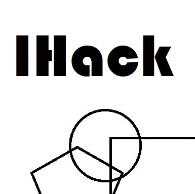

IHack Is A Free Copy Of Hackintosh, It Is Made Using OpenCore NoteBook. You Might See In The Bootloaders Company Names, You See This Because The EFI Bootloader Style Is Downloaded From The Internet. This Project Is Made By Miled Homairah
Credits: OpenCore Team, AMD Team, Mieze, btwise, n.d.k and many others!